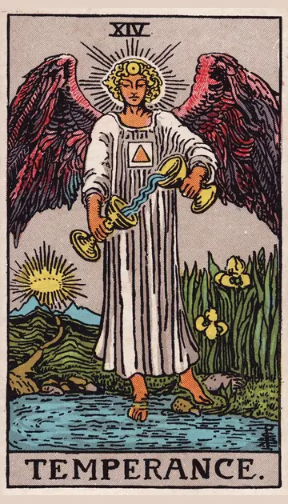

正位置節制の正位置
キーワード：調和・節度・ほどよさ
恋愛
穏やかで、心地よい関係を築ける時です。
相手の気持ちあなたといると、心が落ち着くと感じているようです。
この先自然体でいられる関係が、長く続きそうです。
アドバイス相手と歩み寄り、ちょうどいい距離感を探しましょう。
気をつけること無難さを優先しすぎて、本音を言えなくならないように。
この先自然体でいられる関係が、長く続きそうです。
アドバイス相手と歩み寄り、ちょうどいい距離感を探しましょう。
気をつけること無難さを優先しすぎて、本音を言えなくならないように。
人間関係
周りと調和し、円満に過ごせる時です。
相手の気持ちあなたとの関係に、心地よさを感じているようです。
この先良い仲間とのつながりが深まりそうです。
アドバイス異なる意見を、うまく混ぜ合わせてみましょう。
気をつけること誰にでも良い顔をしすぎないように。
この先良い仲間とのつながりが深まりそうです。
アドバイス異なる意見を、うまく混ぜ合わせてみましょう。
気をつけること誰にでも良い顔をしすぎないように。
仕事・学業
チームワークがうまくかみ合う時期です。
この先協力体制が整い、仕事がスムーズに進みそうです。
アドバイス周りと協力し、役割をうまく分担しましょう。
気をつけること調整ばかりで、自分の仕事が遅れないように。
アドバイス周りと協力し、役割をうまく分担しましょう。
気をつけること調整ばかりで、自分の仕事が遅れないように。
お金
収入と支出のバランスがとれる時です。
この先安定したお金の流れが続きそうです。
アドバイス使う分と貯める分の割合を、決めてみましょう。
気をつけること節約しすぎず、使いすぎずを意識して。
アドバイス使う分と貯める分の割合を、決めてみましょう。
気をつけること節約しすぎず、使いすぎずを意識して。
生活
心と体のバランスが整い、穏やかに暮らせる時です。
この先穏やかな毎日が続きそうです。
アドバイス食事や睡眠を、ほどよく整えましょう。
気をつけること極端な生活の変化は避けましょう。
アドバイス食事や睡眠を、ほどよく整えましょう。
気をつけること極端な生活の変化は避けましょう。
今日の運勢
心と体のバランスがとれた、穏やかな日です。
この先穏やかで満ち足りた時間を過ごせそうです。
アドバイス規則正しい生活を意識してみましょう。
気をつけること穏やかすぎて、だらけないように。
アドバイス規則正しい生活を意識してみましょう。
気をつけること穏やかすぎて、だらけないように。
逆位置節制の逆位置
キーワード：不調和・偏り・リズムの乱れ
恋愛
お互いのペースがかみ合いにくい時です。
相手の気持ちあなたとのペースの違いを、気にしているようです。
この先バランスが戻れば、関係は穏やかになりそうです。
アドバイス自分のペースと相手のペースについて、話し合ってみましょう。
気をつけること一方的に合わせるのも、合わせさせるのも避けましょう。
この先バランスが戻れば、関係は穏やかになりそうです。
アドバイス自分のペースと相手のペースについて、話し合ってみましょう。
気をつけること一方的に合わせるのも、合わせさせるのも避けましょう。
人間関係
気持ちのすれ違いが起きやすい時です。
相手の気持ちあなたとの関係に、少しぎこちなさを感じているようです。
この先歩み寄ることで、関係が整いそうです。
アドバイスどちらかが我慢しすぎていないか、見直してみましょう。
気をつけること極端な言い方をしないように。
この先歩み寄ることで、関係が整いそうです。
アドバイスどちらかが我慢しすぎていないか、見直してみましょう。
気をつけること極端な言い方をしないように。
仕事・学業
連携がうまくいかず、作業が偏りやすい時期です。
この先体制を見直せば、流れが良くなりそうです。
アドバイス役割分担を見直してみましょう。
気をつけること一人で抱え込みすぎないように。
アドバイス役割分担を見直してみましょう。
気をつけること一人で抱え込みすぎないように。
お金
出費と収入のバランスが崩れやすい時です。
この先バランスを取り戻せそうです。
アドバイス支出を一度書き出して、偏りを確かめましょう。
気をつけること一時の気分で、大きく使わないように。
アドバイス支出を一度書き出して、偏りを確かめましょう。
気をつけること一時の気分で、大きく使わないように。
生活
生活のリズムが乱れやすい時です。
この先リズムが戻れば、調子も戻りそうです。
アドバイス寝る時間と起きる時間を、そろえましょう。
気をつけること食べすぎや夜更かしに気をつけて。
アドバイス寝る時間と起きる時間を、そろえましょう。
気をつけること食べすぎや夜更かしに気をつけて。
今日の運勢
生活のリズムが乱れやすい日です。
この先リズムを整えれば、調子が戻りそうです。
アドバイス食事や睡眠のリズムを整えましょう。
気をつけること食べすぎや夜更かしに気をつけて。
アドバイス食事や睡眠のリズムを整えましょう。
気をつけること食べすぎや夜更かしに気をつけて。
このページの文章は、アプリ「ひとやすみタロット」の結果に使っている文章です。アプリでは、あなたの相談や、カードが出た位置（今の状況・これからの流れ・アドバイス）に合わせて、この中から文章を選びます。逆位置の読み方は逆位置のことをご覧ください。